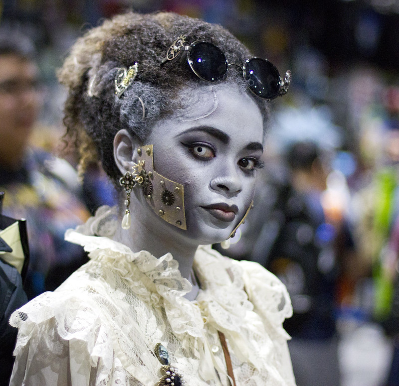

She is about 5’7 and often wears a heavy set of goggles on her head in order to see better as she operates on machinery or concocting an invention. When she does not have her googles, she utilizes a monocle for her left eye as she has difficulty looking through its artificial lens. She is usually seen in combat boots that have a metal rim on the front and heel and fall just below her kneecaps, a stopwatch always hanging around her neck falling below her collared tailored shirt. Complimenting her collared tailored shirt is a fitted vest that has a golden tapestry pattern encompassing it and high waisted fitted trousers that allow her to move around freely between her experimentation/inventions. While being able to engage effectively with others, Hazel lives in her own world while intricately observing the environments she enters. While she has no attachment to the world or the people she engages with, she is more interested in seeing the innerworkings of how things operate in order to advance her own research.
